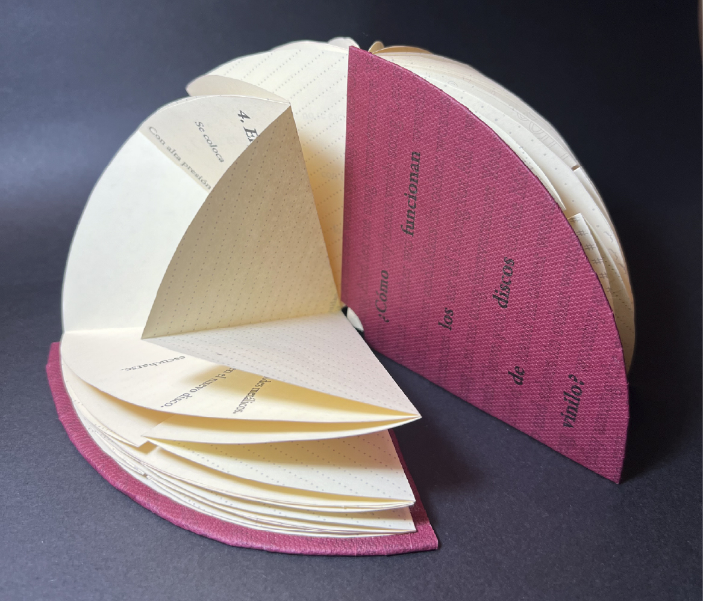
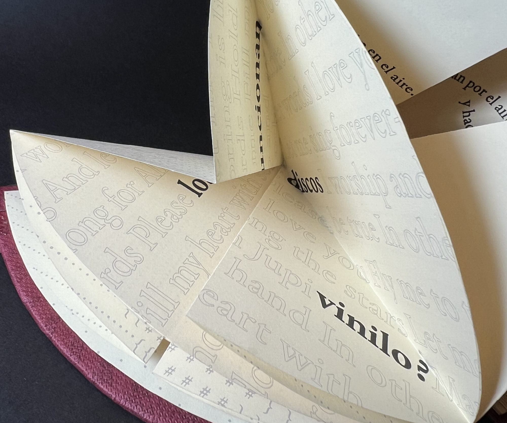
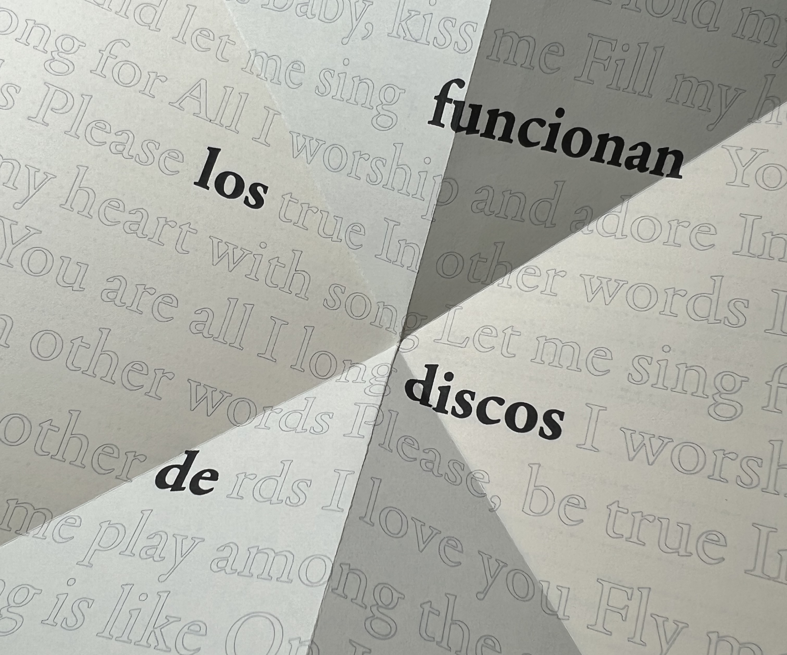
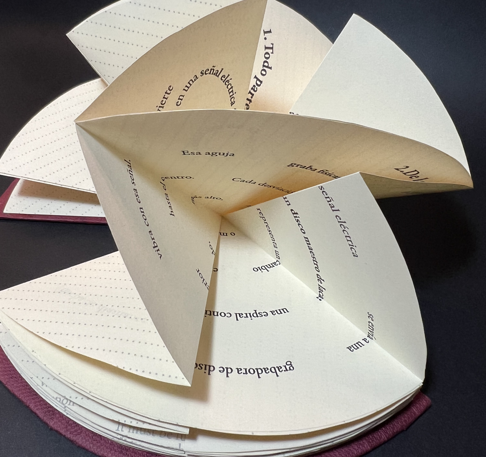

A través de 5 pasos, la publicación explica cómo la música se traspasa a los discos de vinilo para poder reproducirse. Esta edición nace con el propósito de rescatar esta forma clásica de escuchar música y preservarla en el tiempo como un acto de homenaje a lo tangible y análogo.
Esto explica las decisiones editoriales, y cómo cada paso, gracias a su diagramación, simboliza el movimiento de la música y la vibración.



